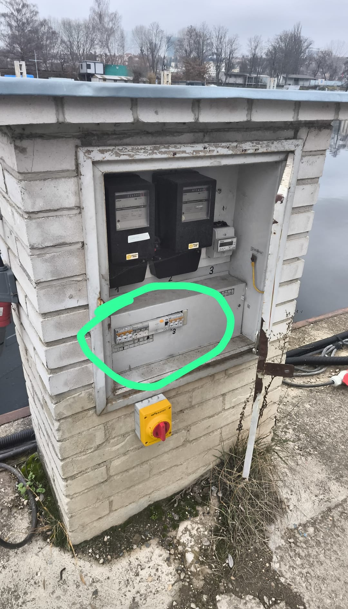

Strømafbrydelse – førstehjælp
Hvis du er i stand til at handle på et elektrisk bræt, så tjek panelerne som på dette billede. VILDT: Bær ALTID GUMMESOLER, når du rører ved elektriske paneler eller apparater!
Se nedenfor og kontakt os i tilfælde af behov! Kontakt os

De røde prikker viser, hvor de afbrydere sidder, som skal tjekkes, om de står oppe.
Tjek først el-tavlen inde i houseboaten: alle afbrydere skal stå oppe.

(medmindre der er et skilt, bånd eller noget usædvanligt).

Elektriske paneler er på dokken, lignende denne. Nogle er baglæns.

Tjek disse for op position, nær den blå port.

Disse kan også snubles ned.

I starten af parkeringspladsen skal du kontrollere, om nummer 9 har alle afbrydere tændt (


Nummer 9 indeni (du har brug for en nøgle eller noget, der roterer den firkantede peg)
Tip: en saks kan hjælpe med at dreje det firkantede hul i håndtaget for at åbne nummer 9.
VIGTIGT: luk altid tavlelågen igen bagefter, især i regnvejr.

Længere væk har nummer 8 nogle knapper, som også skal være tændt.
Tip: en saks kan hjælpe med at dreje det firkantede hul i håndtaget for at åbne nummer 8.
VIGTIGT: luk altid tavlelågen igen bagefter, især i regnvejr.

Tjek dem herinde. Tjek altid, at ingen arbejder nedadstrøms!
VIGTIGT: ANMELD VENLIGST, HVILKEN KNAP DER VAR NEDE. TAG ET BILLEDE FØR OG EFTER.
Blackouts i husbåde er mere almindelige end i en lejlighed på grund af kapacitetsgrunde og flere krav på grund af vejret, især i meget varme eller meget kolde dage.
Denne side er oversat automatisk fra den engelske guide. Ved tvivl gælder den engelske version. Engelsk original